The Elo Rating System: A possible replacement to the current ranking system in men's tennis?
By Shreyes Sridhara | November 13, 2022

Avid fans of tennis are likely aware of the rating system used by the ATP (Association of Tennis Professionals) Tour. However, most commentators and revered tennis analysts (such as Jeff Sackmann) maintain the notion that this ranking system is flawed. Briefly, their argument is that this rating system does not estimate the current playing abilities of the tennis players and only considers results from the top 19 events (the ATP Tour decides what these tournaments are) in a season (ATP Tour).
Besides the arbitrary tournament cap placed when considering rankings, the ATP tour chooses to factor in performance in the later stages of only certain tournaments and has been heavily influenced by politics in the past—case in point, Wimbledon 2022, where Novak Djokovic received no points for winning a Grand Slam. It’s clear that the current ranking system is only reflective of recent success, but the extent to which this is even true is questionable.
It’s quite shocking that a more logical and accurate method to rate tennis players has not been implemented already. Specifically, one that would effectively measure the current relative strength of the players with respect to the population and one that would be better at predicting future match results.
That’s where the Elo rating system comes into play.
Elo for Tennis
The Elo rating system was first used in chess and has since been extrapolated to other zero-sum games—situations in which the total number of points in a system remains constant since points are transferred from one player to another after a match (Kenton). Since there are no draws in a tennis match (always a winner and a loser), the sport can be classified as a zero-sum game too—which just makes the absence of Elo in tennis rankings all the more perplexing.
Before tailoring the Elo rating system to tennis, here are some points to know about the system itself. The rating of a player (a number) is a measure of their playing ability and is updated (increased or decreased based on winning or losing respectively) depending on the result of the next match (Sackmann). What is more, the probability of a player winning in a matchup can be calculated from these ratings. Two intuitive factors are considered in the Elo model to this end: the first being the caliber of the opponent and the second being the total number of matches (or data) in the system—the latter helps to gauge how confident we are with the rating (Sackmann).
If we were to take a hypothetical match between two players 𝑖 and 𝑗 from a system of tennis players, and 𝑖 emerges as the victor, the probability of 𝑖 winning and a method to update the players’ ratings based on the match result can be formulated. They can be found below.
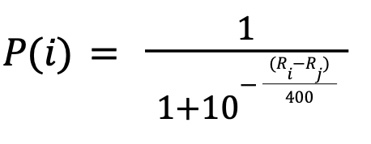...where 𝑃(𝑖) is the probability of player 𝑖 beating player 𝑗, and Ri and Rj are the ratings of players 𝑖 and 𝑗 respectively.
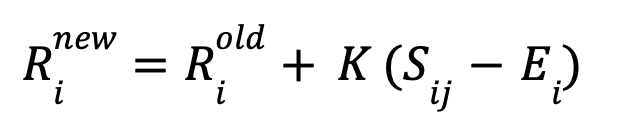...where 𝑅inew is the new rating for player 𝑖 in the Elo system, while 𝑅iold is the old rating, 𝐾 is the K factor (usually taken as 32), 𝑆ij is the actual score of 𝑖 beating 𝑗 (1 for 𝑖 since this player won and 0 for the losing player 𝑗), and Ei is the expected score for 𝑖 (probability of winning or the value of 𝑃(𝑖) from the previous formula).
Main Assumption in Elo
The core assumption with Elo is that each player’s present strength (or performance) is a random variable—we shall define this random variable as 𝑃𝑒𝑟𝑓i ∈ 𝑅—and is a representation of a player’s level (and changes in value after every game he plays). Furthermore, 𝑃𝑒𝑟𝑓i follows a Gumbel distribution (Matt).
Similar to a normal distribution, a Gumbel distribution takes into account two parameters: μ and β, which are the rating of the player and the deviation in performance (known as the scale parameter) respectively. However, this distribution differs from the familiar normal distribution in that it has a heavier tail (positively or negatively skewed), as the Gumbel distribution’s probability density function (PDF) is used to model minimum or maximum values. This means that, unlike normal distribution, Gumbel distribution is not symmetric, and is more suitable for capturing and modeling player strength (ReliaSoft).
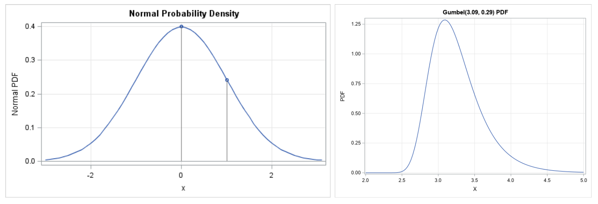Figure 1: PDFs of normal distribution (left) and Gumbel distribution (right)
Mathematically, it is represented by
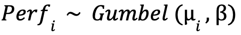Given this, here are two main takeaways from this section:
- The μ value is the player’s rating (Ri or Rj) and determines where the peak is located, but is not the mean since a Gumbel distribution is asymmetric.
- Having the same scale parameter β for all players is something that is not entirely accurate (another assumption) since some tennis players perform more consistently than others.
With this in mind, we can return to our example and represent players 𝑖 and 𝑗 as Gumbel distributions.
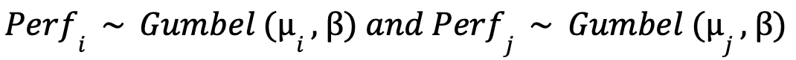Figure 2 below shows an example of the two random variables. Player 𝑖 has been made better than player 𝑗.
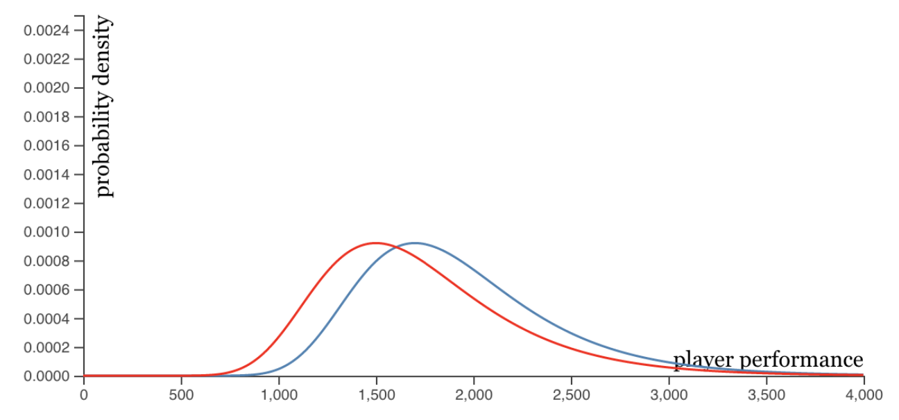Figure 2: BLUE => μi= 1700; RED => μj= 1500; β = 400
Two Players Example
Using the data in Figure 2, where μi= 1700, μj= 1500, and β = 400, the probability of winning for 𝑖 can be calculated.
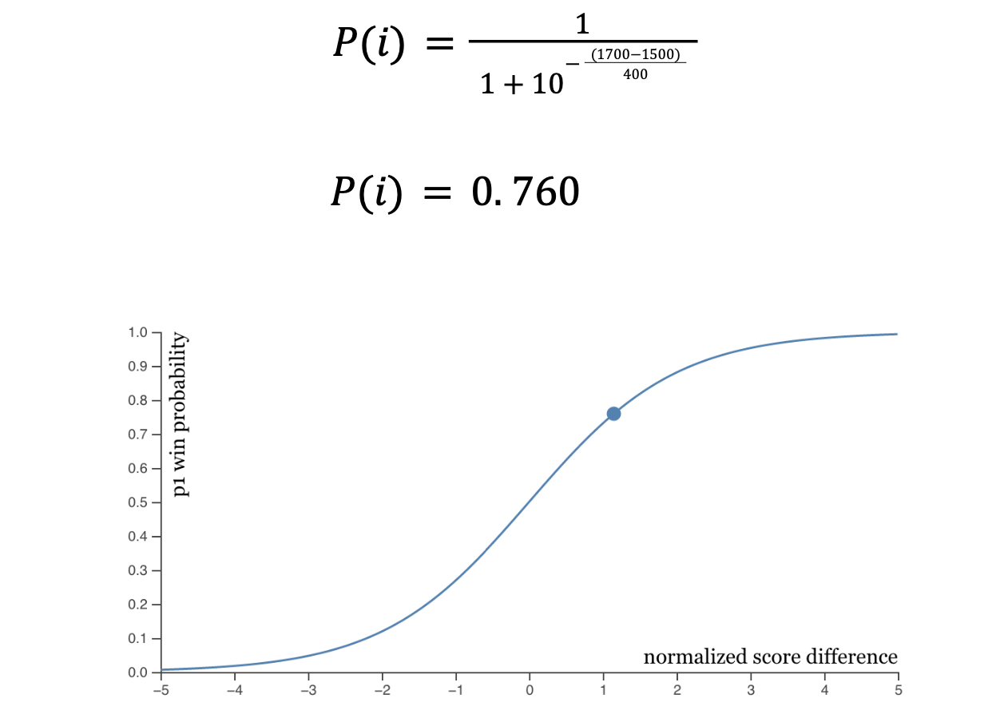Figure 3: a visual rendition of the cumulative distribution function (CDF) for this example
Player 𝑖’s new Elo rating =>
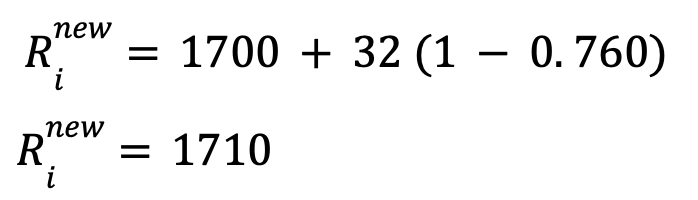Player 𝑗’s new Elo rating =>
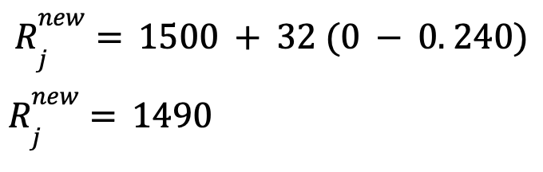Evaluating the Elo Rating System
I will be using the tennis Elo rating system created by Jeff Sackmann (Sackmann). These ratings are updated on a regular basis and so they accurately reflect the current strength of the players. Using the Elo winning probability formula, we can compare the output we get with the current ranking system to determine which of the two more accurately represents the current abilities of the players.
The understanding of the ATP rankings is that a higher-ranked player in their system beats the lower-ranked player.
Example #1
During the BNP Paribas Open that took place in March 2022, Reilly Opelka defeated Denis Shapovalov in a three-set thriller. Opelka and Shapovalov were ranked 18th and 14th in the world respectively before the match by the ATP; Shapovalov was the favorite to win the match in the ATP’s eyes. However, Elo recognized Opelka’s recent success in the tournaments leading up to this matchup and placed him one spot above his adversary (which means his rank number is lesser in face value and he is the better player). Refer to Table 1 below.
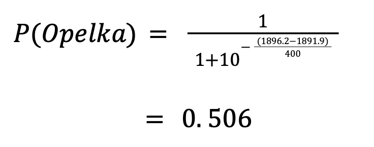Table 1: ATP rankings and Elo ratings for the same tennis players (Sackmann). As observed above, the Elo Rank is based on how high one’s Elo Rating is
Using the Elo winning probability formula on Opelka,
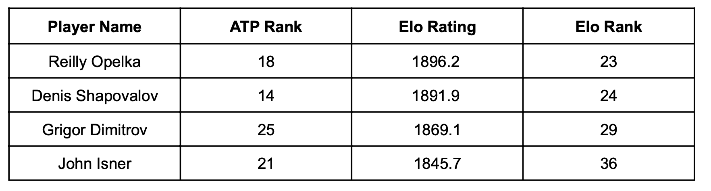Although definitely not a significant winning probability for Opelka, Elo did place him over Shapovalov unlike in the official rankings.
Example #2
Another match in the same tournament that caught fans’ attention was the round-of-32 match between Grigor Dimitrov and John Isner. The seemingly off-form player trounced one of the best servers on the ATP Tour. Isner was ranked 4 spots above Dimitrov by the ATP.
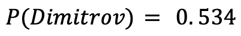These probabilities may not be impressive, but the fact that Elo placed Dimitrov 7 spots above Isner shows its potency in predicting match outcomes when the outcome is not obvious: for instance when two competitors are not ranked a hundred spots away from each other.
Example #3
A study done by Sackmann on the 2019 Davis Cup finals, cements Elo’s superiority over the ATP system. Fifty singles matches were played at the event, with Elo predicting the winner right in 36 matches for an accuracy of 72%, while the ATP only predicted 30 for an accuracy of 60%. Furthermore, Sackmann claims that Elo is better than the ATP at match predictions over the course of an entire season (Sackmann).
Using Brier Score
Brier scores are used to gauge the accuracy of probabilistic predictions (Zach).
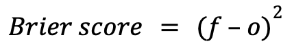...where 𝑓 is the forecasted probability (by Elo in this case) and 𝑜 is the outcome (0 if the event did not occur and 1 if it did). The output is a value between 0 (best scenario) and 1. The squared difference reveals that it heavily penalizes strong predictions that end up being wrong, and this is why I decided to utilize this metric.
The match that Rafael Nadal won against Denis Shapovalov sealed the Davis Cup title for Spain. Before the match, the ratings for Nadal and Shapovalov were 2203 and 1947 respectively. This equates to a win percentage of 81.4% for Nadal. Inputted in the brier score metric,
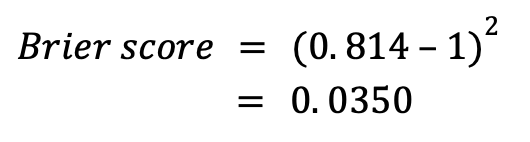This value is quite low and therefore indicative of a good prediction. However, if Shapovalov had won that match,
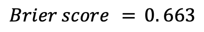...quantifying how incorrect this forecast would have been. However, the lower Brier score for Nadal winning and Sackmann’s results are just more metrics to justify the need for a better rating system for world-renowned tennis players than what is currently being used on the ATP Tour: and Elo could be the next better alternative.
Limitations of the Elo Rating System
At first glance, the Elo rating system seems too good to be true. It consistently predicted the right winner in tennis matches and by estimating the current strength of all the tennis players, it could be useful for tennis players who wish to understand and compare their level to others. Many possess this perspective of the Elo rating system because they compare it directly to the ATP ranking system, which just ranks based on a limited number of tournaments played or won during a tennis season, while not even considering the quality of the opponents faced. However, the more one contemplates and reads about Elo, the more flaws one discovers with it—especially with regard to its application in tennis
Keen fans of tennis are aware of the fact that there are best-of-three sets matches and best-of-five sets matches in the sport: the latter happening only at Grand Slams (the biggest events). While the Elo ratings for both types of matches can be computed, combining the two to create one Elo rating is a difficult task to get correct in order to show an accurate representation of every player’s strength. Another issue that may undermine the correctness behind tennis Elo ratings is that matches are played on different surfaces (clay court, hard court, and grass court) throughout the season. Some players dominate opponents during the clay-court swing, yet struggle against the same players a few months later on grass courts. Calculating four different Elo ratings—overall, clay, grass, and hard—for each player may be the right move forward as using a strong clay-court player’s overall rating during the clay season would be unreliable as the same player might be a poor performer on hard courts.
Next, there are assumptions made in the mathematical derivation of the Elo winning probability formula. Firstly, it is assumed that all players in the system have the same deviation from their current strength/level. This is untrue not only in tennis but also in other sports. Secondly, there is the problem of Elo inflation and deflation. Although no new points are added to the system after every match (points are transferred instead), the total number of points in the system increases once a new player enters the circuit. What is more, the mean rating of all players increases if a player with a rating below 1500 (the initial rating assigned to all players) retires (Matt). There tend to be more additions than subtractions so Elo ratings increase over a time period—clearly, not due to increased player strength (Sackmann). Finally, when a player returns to the tennis tour after an injury, his strength cannot be assumed to be the same as it was before. Whether or not the player will return stronger or worse than before or back to normal is unpredictable; hence, the amount by which the player’s Elo rating should change is unclear.
Conclusion
Nonetheless, Elo has repeatedly proven its efficacy in predicting match winners better than the ATP system and that is something that cannot be ignored. The study above demonstrated how Elo is quantitatively better than the ATP Tour’s rankings when measuring the current playing abilities of players.
Citations
ATP Tour. “ATP Rankings.” ATP Tour, 2022, https://www.atptour.com/en/rankings/rankings-faq.
Kenton, Will. “Zero-Sum Game.” Investopedia, Investopedia, 20 Mar. 2022, https://www.investopedia.com/terms/z/zero-sumgame.asp.
Matt. “Elo Ratings.” Terbium, 26 Nov. 2020, https://terbium.io/2020/11/elo/#the-how. Morse, Steven. “Elo as a Statistical Learning Model.” Elo as a Statistical Learning Model
ReliaSoft. “Overview of the Gumbel, Logistic, Loglogistic and Gumbel Distributions.” Weibull.com -- Free Data Analysis and Modeling Resources for Reliability Engineering, 2005, https://www.weibull.com/hotwire/issue56/relbasics56.html.
Sackmann, Jeff. “An Introduction to Tennis Elo.” Heavy Topspin, 3 Dec. 2019, http://www.tennisabstract.com/blog/2019/12/03/an-introduction-to-tennis-elo/.
---. “Tennisabstract.com.” Tennis Abstract: ATP Elo Ratings, 21 Mar. 2022, http://tennisabstract.com/reports/atp_elo_ratings.html.
Zach. “What Is a Brier Score?” Statology, 9 May 2020, https://www.statology.org/brier-score/.